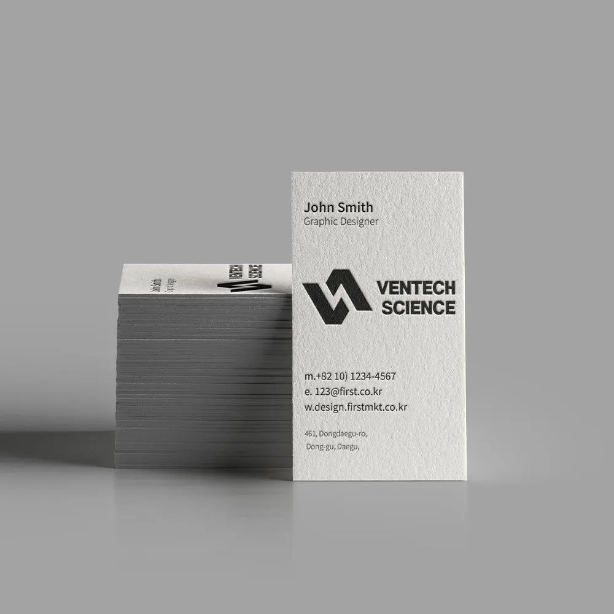
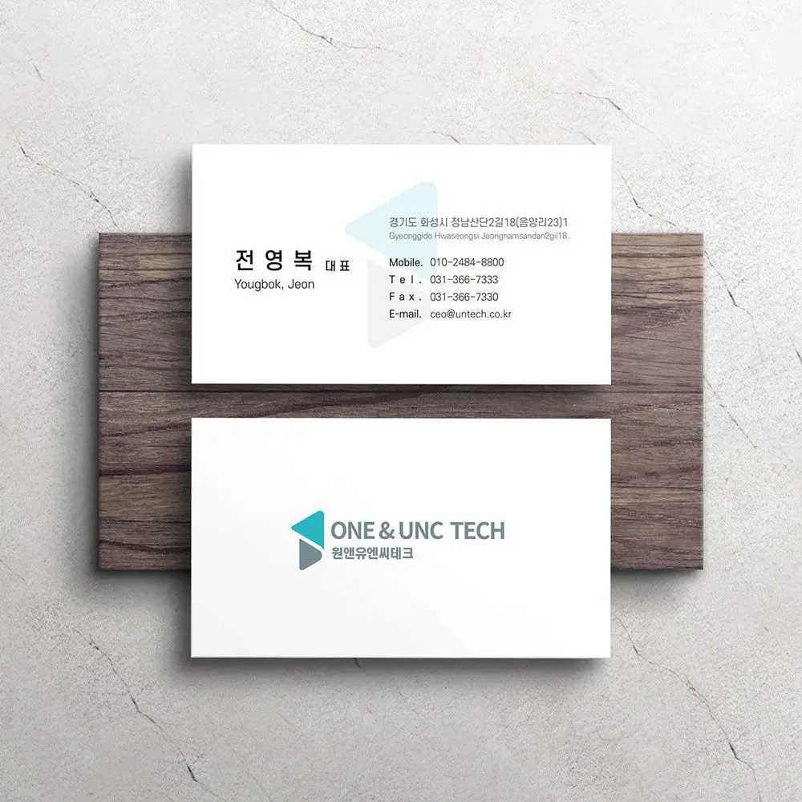
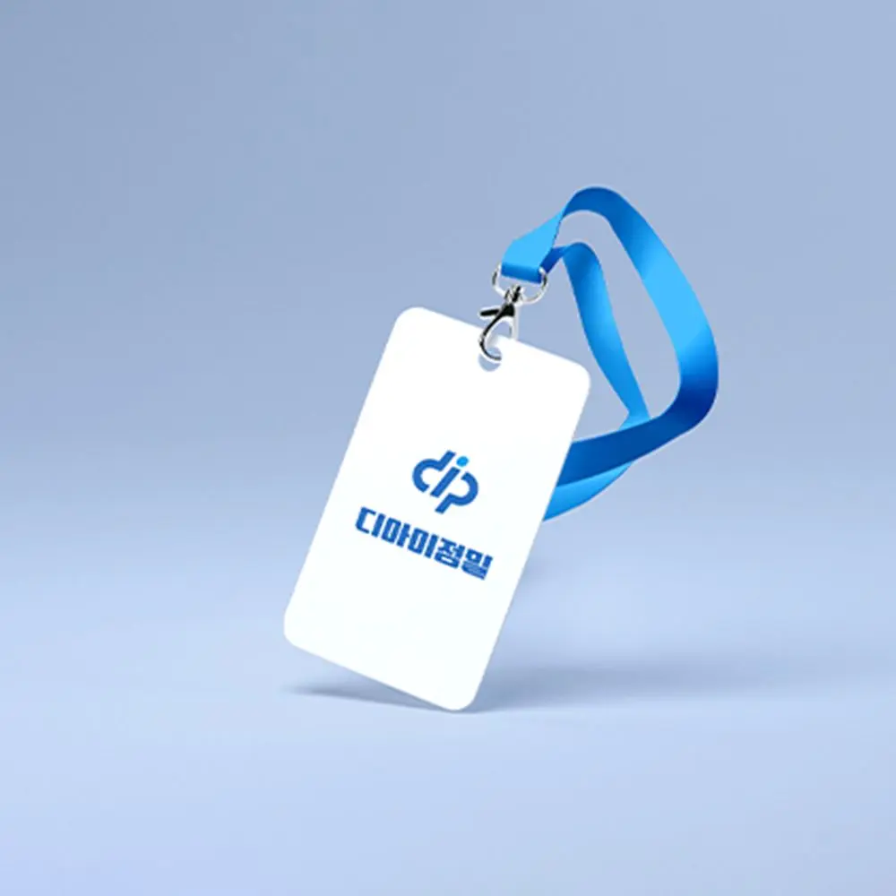
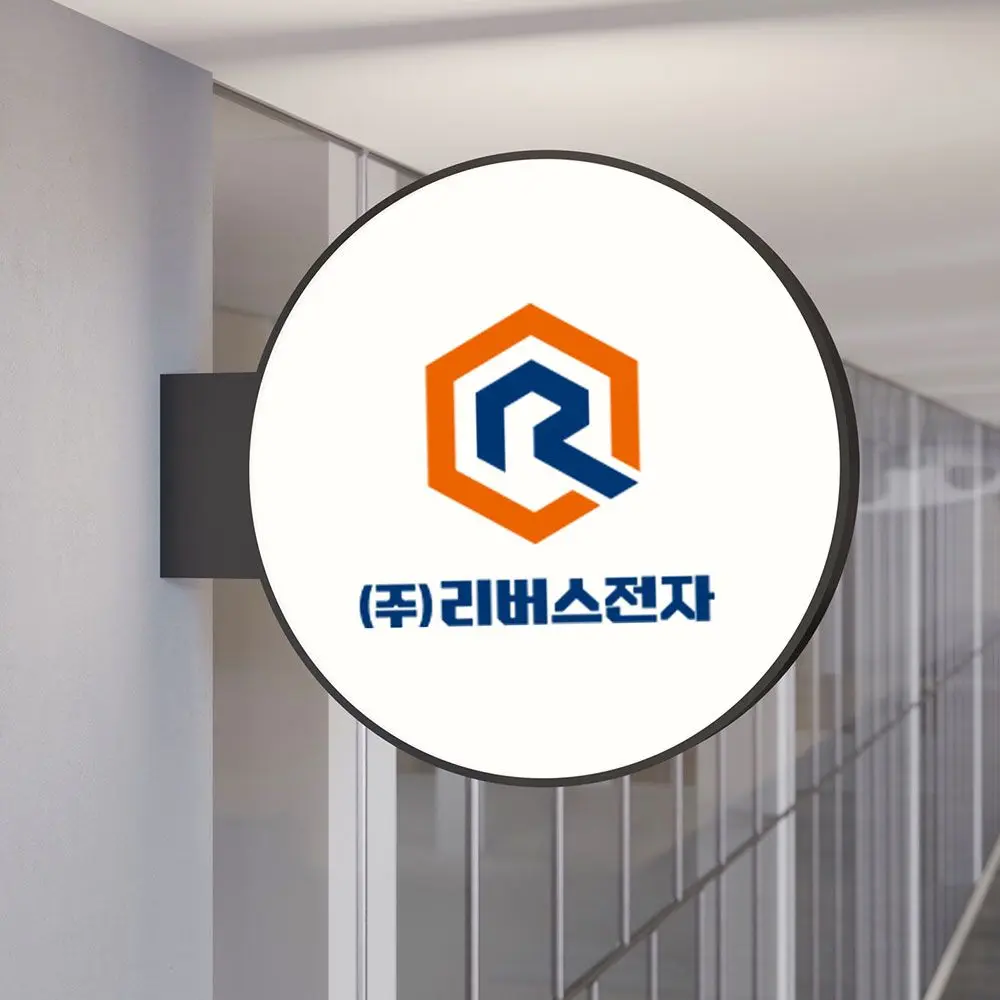

연구소기업 등록 · 창업 초기에 로고부터 명함까지 필요할 때
로고 · 명함 · 1페이지 회사소개서 · 홈페이지 첫 화면을 한 번에 준비하고 지원사업 제출용 파일로 정리합니다.
대전 · 세종 · 충청권 방문 미팅평일 09:00 ~ 18:00
BRANDING
이름을 지은 다음에 하는 첫 번째 일, 로고.
연구소기업·기술 스타트업·병원·매장의 아이덴티티를 명함과 간판까지 한 번에 설계합니다.

대전지사의 방식
대덕특구의 연구소기업과 기술 스타트업 로고는 제품 원리를 그림에 욱여넣으려다 복잡해지는 경우가 많습니다.
화면에서 보기 좋은 로고가 명함과 카탈로그에서 뭉개지는 일이 흔합니다.
이런 경우
로고 · 명함 · 1페이지 회사소개서 · 홈페이지 첫 화면을 한 번에 준비하고 지원사업 제출용 파일로 정리합니다.
인지도를 유지하는 부분 리뉴얼과 전면 리뉴얼 중 상황에 맞게 제안하고, 인쇄물 · 간판 교체 비용까지 계산해 드립니다.
최소 크기 · 여백 · 금지 사례 · 전용 색상과 서체 · 적용 예시를 담은 브랜드 가이드를 만듭니다.
제작 항목
필요한 항목만 골라 의뢰하셔도 좋습니다.
BRANDING
연구소기업·기술기업·기관의 로고와 기업 아이덴티티를 설계합니다.
심볼·워드마크·시그니처와 전용 색상·서체까지 정리합니다.

BRANDING
명함, 봉투, 레터헤드, 사원증, 이메일 서명을 한 규격으로 만듭니다.
자체 인쇄소에서 명함 인쇄까지 바로 진행합니다.

BRANDING
사무실 입구 사인, 실내 벽면 그래픽, 매장 간판을 로고 규정에 맞춰 디자인합니다.
제작 업체에 넘길 도면까지 정리합니다.

BRANDING
제품·서비스 브랜드의 이름과 톤을 정하고 적용 규칙을 가이드북으로 만듭니다.
누가 만들어도 같은 브랜드가 나오게 합니다.

BRANDING
창업 초기에 필요한 로고·명함·회사소개서·홈페이지 첫 화면을 한 번에 준비합니다.
지원사업 신청 서류에 바로 쓸 수 있게 정리합니다.
| 구분 | 기본 제작 사양 |
|---|---|
| 범위 | 로고 · 심볼 · 워드마크 · 시그니처 · 전용 색상 · 서체 |
| 시안 | 방향이 다른 2 ~ 3안, 명함 크기 적용 예 포함 |
| 전달 파일 | AI · PDF · PNG · SVG (인쇄용 · 웹용 · 간판용 분리) |
| 색 규정 | CMYK · RGB · Pantone, 자체 인쇄소 색 교정 |
| 표준 기간 | 방향 상담 1주 + 시안 · 수정 1주 + 명함 · 서식 적용 1주 |
| 함께 제작 | 명함 · 봉투 · 사원증 · 사이니지 · 브랜드 가이드 |
상담 시 목적 · 수량 · 일정에 맞춰 조정합니다.
진행 순서
업종과 사용처, 일정,
참고 이미지를 확인합니다.
키워드와 무드보드로 방향을 정하고
견적과 일정을 안내합니다.
방향이 다른 시안 2~3안을
명함 크기 적용 예와 함께 제안합니다.
고른 안을 다듬고
색 · 서체 · 여백 규정을 확정합니다.
명함·서식·간판에 적용하고
파일과 가이드를 전달합니다.
제작 사례




자주 묻는 질문
대전에서 로고와 브랜딩을 의뢰하실 때 가장 많이 받는 질문입니다.
방향 상담 후 시안 2~3안까지 약 1주, 수정과 확정에 1주, 명함·서식 적용에 1주 정도로 3주가 걸립니다. 연구소기업 등록이나 개원 일정이 있으면 그 날짜에 맞춰 순서를 조정합니다.
가능합니다. 다만 로고와 같은 팀이 명함·간판·인쇄물까지 만들면 색과 여백 규정이 어긋나는 일이 없고, 인쇄 단계에서 로고 색이 달라지는 문제도 함께 관리할 수 있습니다.
로고 시안 단계에서 유사 상표 검색을 먼저 해 등록 가능성이 낮은 방향은 피합니다. 실제 출원은 변리사 사무소를 통해 진행하시고, 출원에 필요한 로고 파일과 색상 규격은 저희가 정리해 드립니다.
네. 기존 로고의 인지도를 유지하면서 형태와 색을 정리하는 부분 리뉴얼과, 방향을 새로 잡는 전면 리뉴얼 중 상황에 맞게 제안합니다. 기존 인쇄물과 간판 교체 비용까지 함께 계산해 드립니다.
로고 최소 크기와 여백, 금지 사례, 전용 색상(CMYK·RGB·Pantone)과 서체, 명함·봉투·서식과 사이니지 적용 예시가 들어갑니다. 내부에서 누가 만들어도 같은 결과가 나오게 하는 것이 목적입니다.
네. 대전 전 지역과 세종·청주는 필요한 날 방문해 참고 자료와 인쇄 샘플을 함께 보며 상담드립니다. 전화 1600-9487로 요청해 주세요.
FIRST DESIGN DAEJEON
기획 · 디자인 · 번역 · 촬영 · 인쇄를 한 팀이 진행합니다.
원고가 정리되기 전이라도 목차와 일정부터 함께 잡아 드립니다.